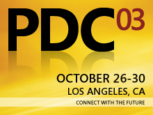
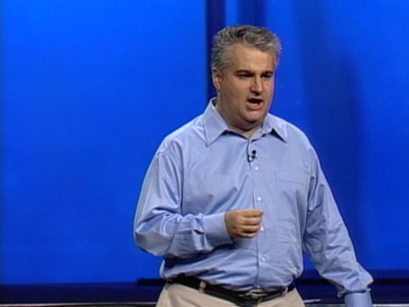
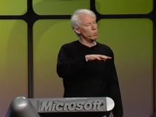
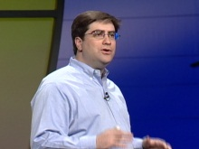
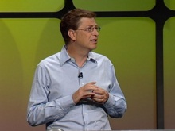

Event - PDC 2003
Event - PDC 2003
 PDC 2003 took place from October 27–30 at the Los Angeles Convention Center in Los Angeles, California. Some of the news included the unveiling of Windows Longhorn, as well as Avalon, Aero, Indigo, and WinFS.
PDC 2003 Keynote with Gordon Mangione [2:00:43] [2011/05/21]In this PDC 2003 Keynote, Gordon Mangione delivers a talk about SQL Server Yukon and WinFS.
PDC 2003 Keynote with Jim Alchin [2:00:43] [2011/05/21]This PDC 2003 Keynote features Jim Alchin as he shows developers what they can do with Longhorn.
PDC 2003 Keynote with Eric Rudder [1:27:36] [2011/05/21]In this PDC 2003 Keynote, Eric Rudder thanks developers for the great work they do and talks about Yukon.
PDC 2003 Keynote with Bill Gates [0:37:17] [2011/05/21]In this PDC 2003 Keynote, Bill Gates opens up the "Longhorn" PDC. He also takes a walk down PDC memory lane.